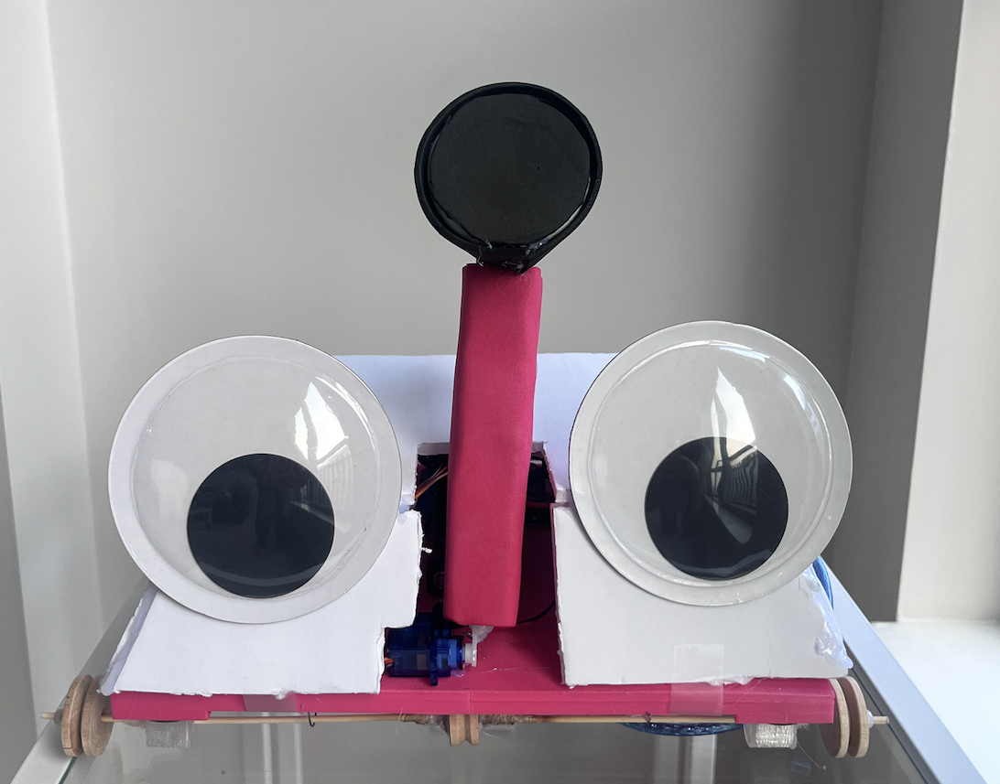
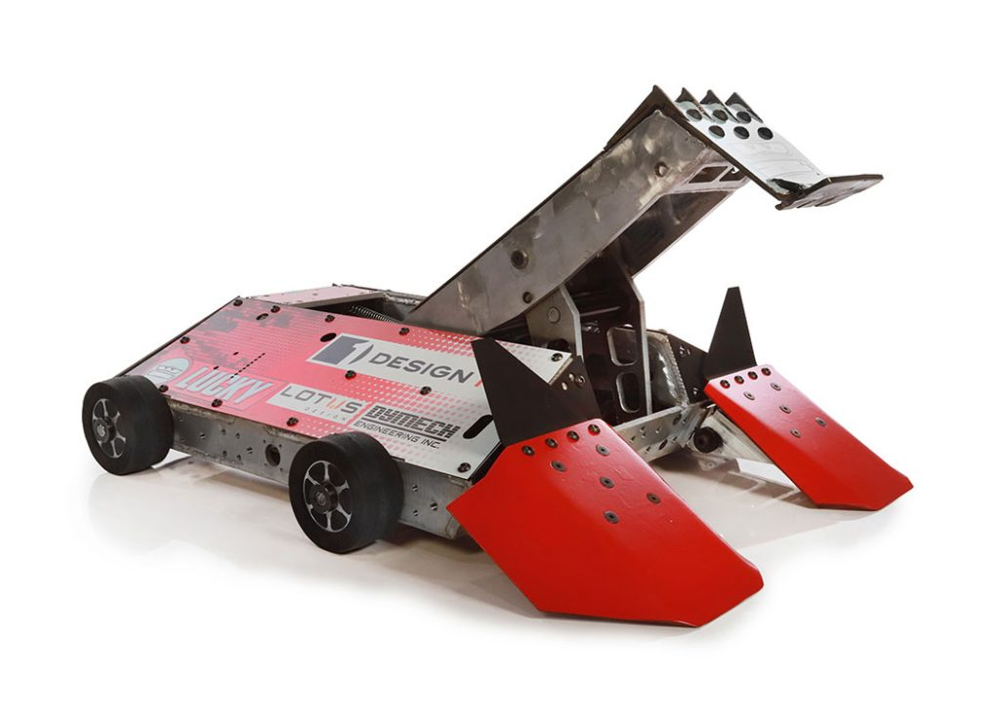

BattleBot
Inspired by the show "Battlebots", myself and my 3 friends build a prototype battlebot named Nigel. Nigel was built using a 3-D printed chassis, an arduino uno, as well as an L298 driver board to control the wheels. After various itertion and many lessons learned, we ended up with a product we are proud of.
 About the Project
BattleBot was designed to explore the application of mechanical and programming skills. The project used Gantt charts, risk matrices, and Arduino programming for efficient design and prototyping.
Gallery


Skills Learned
- Programming with Arduino
- Mechanical Design
- Electronics Integration